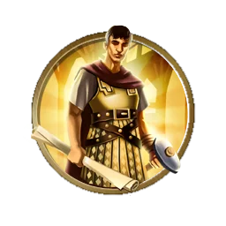

大工程师
策略提示:
大工程师能够建造制造中心，当市民在制造中心工作时将会为该城市提供大量的 产能产出。大工程师还能够加速建造。使用任意一种能力后大工程师会被消耗掉。
产能产出。大工程师还能够加速建造。使用任意一种能力后大工程师会被消耗掉。
产能产出。大工程师还能够加速建造。使用任意一种能力后大工程师会被消耗掉。历史信息:
“大工程师”是擅长完成各种伟业的人。他们建造纪念碑、道路和信息网络来提升人们的生活品质。他们创造建筑或轧钢的新工艺；他们挖掘运河；他们把沙漠变成绿洲；他们推动着文明世界不断向前发展。

产能产出。大工程师还能够加速建造。使用任意一种能力后大工程师会被消耗掉。